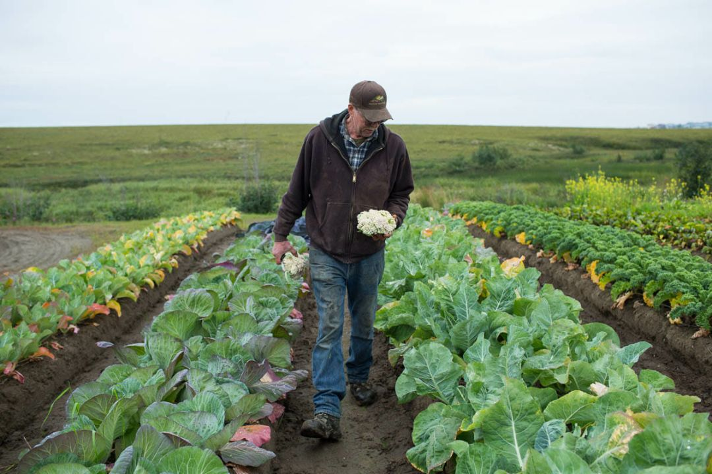

Где мы работаем

ВеликобританияПотребность в сельскохозяйственных работниках значительно превышает текущее предложение. Мы поощряем всех желающих подавать заявки на сезонную сельскохозяйственную работу.
Мы также набираем опытных трактористов, операторов опрыскивателей и других специалистов из Великобритании.
 Казахстан
Казахстан
Казахстан граничит с Россией. Это бывшая Советская Республика. Русский язык является вторым государственным языком.
Около 16% рабочей силы страны занято в сельском хозяйстве. Программа SWS рассматривается как отличная возможность.
 Болгария
Болгария
Болгарские граждане имеют давние связи с сезонной сельскохозяйственной работой в Великобритании — они были одной из двух стран в схеме SAWS с 2007 по 2014 год.
Многие фермы стремятся дополнить своих постоянных болгарских работников новыми.